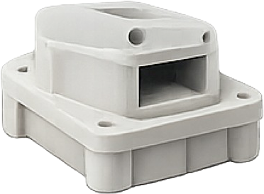
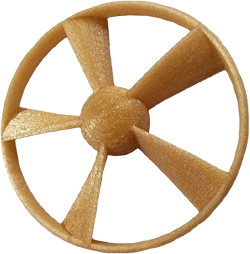

FDM-3D-Druck
Die am weitesten verbreitete 3D-Drucktechnologie: ein geschmolzener Kunststofffaden, Schicht für Schicht aufgetragen. Vom PLA-Prototyp bis zum PEEK-Luftfahrtteil.

FDM in 3 Schritten
Der Faden schmilzt
Eine Kunststoffspule speist eine beheizte Düse, die das Material schmilzt.
Die Düse zeichnet
Die Düse trägt das Material Linie für Linie auf, wie ein computergesteuerter 3D-Stift.
Schicht um Schicht
Das Teil wächst Schicht für Schicht, vom günstigen PLA bis zum Hochleistungs-PEEK.
Ihr Teil
Senden Sie Ihre Datei: Wir bestätigen, dass FDM die richtige Wahl ist, oder empfehlen Ihnen eine andere Technologie.
Wann wählen?
Interaktives Rendering · ziehen zum Drehen
- Schnelle, günstige Prototypen
- Sehr große Werkstoffauswahl, von PLA bis PEEK und ULTEM
- Große Teile (Modix Big Meter)
- Mehrfarbige und Multimaterialteile
- Sichtbare Schichtlinien
- Geringere Festigkeit zwischen den Schichten: Die Ausrichtung zählt
- Stützstrukturen für Überhänge nötig
Unsere FDM-Maschinen
Bambu Lab H2C
Multimaterialdruck
Datenblatt ansehen →
Bambu Lab X1C
3D-Druck für Serien
Datenblatt ansehen →
Prusa Core One
Schnelles industrielles Prototyping
Datenblatt ansehen →
Modix Big Meter
Großformatiger 3D-Druck
Datenblatt ansehen →
INTAMSYS Funmat HT
Industrielle Werkstoffe
Datenblatt ansehen →Unsere FDM-Werkstoffe

PLA
PLA, der Standardwerkstoff
Datenblatt ansehen →
PETG
Der große Bruder von PLA
Datenblatt ansehen →
ABS
Der Klassiker für technische Teile
Datenblatt ansehen →
ASA
Für den Außeneinsatz?
Datenblatt ansehen →
TPU
Flexibilität ohne Kopfzerbrechen
Datenblatt ansehen →
PP
Leicht, flexibel und chemikalienbeständig.
Datenblatt ansehen →
PA12-CF
Steif leicht technisch
Datenblatt ansehen →
PA12-GF
Stabil robust industriell
Datenblatt ansehen →
PPS-CF
Extreme Leistung für raue Umgebungen.
Datenblatt ansehen →
PEEK
Maximale industrielle Leistung
Datenblatt ansehen →
PEKK
Zugängliche Hochleistung
Datenblatt ansehen →
ULTEM (PEI)
Extreme Hochtemperatur
Datenblatt ansehen →Vergleichen, um besser zu wählen
FDM vs SLS vs SLA
FDM, SLS oder SLA (Harz): Welche 3D-Drucktechnologie wählen? Vergleich von Präzision, Werkstoffen, Kosten und Lieferzeit, von O&D Impression 3D in Lüttich.
Datenblatt öffnen →Vergleich · 02PLA vs. PETG
PLA oder PETG: Was wählen? Kompletter Vergleich von Festigkeit, Temperatur und Kosten, von O&D Impression 3D, Ihrer Werkstatt in Welkenraedt (Lüttich).
Datenblatt öffnen →Vergleich · 03ABS vs. ASA
ABS oder ASA für Ihre technischen Teile? Vergleich von UV-, Wärme- und mechanischer Beständigkeit, von O&D Impression 3D, Werkstatt in Welkenraedt (Lüttich).
Datenblatt öffnen →Vergleich · 04PA12-CF vs. PA12-GF
Kohlefaser oder Glasfaser für Ihr Nylon PA12? Vergleich von Steifigkeit, Gewicht und Schlagfestigkeit, von O&D Impression 3D in Lüttich.
Datenblatt öffnen →Vergleich · 05PPA-CF vs. PPS-CF
PPA-CF oder PPS-CF für Ihre Industrieteile? Entdecken Sie unseren kompletten technischen Vergleich: thermische, chemische und mechanische Beständigkeit in…
Datenblatt öffnen →Vergleich · 06PEEK vs. PEKK vs. Ultem
PEEK, PEKK oder Ultem für Ihre Hochleistungsteile? Vergleich von Temperatur, Festigkeit und Kosten, von O&D Impression 3D in Lüttich.
Datenblatt öffnen →Realisierte Projekte

Polypropylen-Teil für eine Logopädin
Maßgefertigtes Therapiewerkzeug für eine Logopädin, im 3D-Druck aus Polypropylen nachgebaut und an die Bedürfnisse der Patienten angepasst. O&D-Projekt…
Datenblatt öffnen →
Fleischwolf-Zahnrad im 3D-Druck nachgebaut
Gebrochenes Fleischwolf-Zahnrad in PLA nachgebaut: Reverse Engineering in 1 h, Teil in weniger als 48 h fertig. Ein Projekt von O&D Impression 3D, Welkenraedt.
Datenblatt öffnen →
Audi-S3-Teile in PAHT-CF nachgebaut
Nachbau beschädigter Audi-S3-Teile in PAHT-CF und PLA: Stoßstangengitter und S3-Logoabdeckungen. Ein Projekt von O&D Impression 3D, Lüttich.
Datenblatt öffnen →
Infrabel-Modell
3D-gedruckte Miniaturschienen aus PLA für das Einweihungsmodell von Infrabel. Ein Projekt von O&D Impression 3D, Werkstatt in Welkenraedt (Lüttich).
Datenblatt öffnen →
Hockerfüße
40-cm-Hockerfüße aus schwarzem PLA, maßgedruckt für Airbnb-Ferienhäuser in Herve: 24 h pro Teil, Prototyp gratis. O&D-Projekt…
Datenblatt öffnen →
Zaunspitze in ASA nachgebaut
Gebrochene dekorative Zaunspitze, anhand von Fotos neu konstruiert und in UV-beständigem ASA auf einem Bambu Lab X1C nachgedruckt. O&D-Projekt, Welkenraedt.
Datenblatt öffnen →Ihr Teil, gefertigt.
Senden Sie Ihre 3D-Datei oder beschreiben Sie Ihren Bedarf: Sofortangebot mit Datei, individuelles Angebot innerhalb von 24 h.